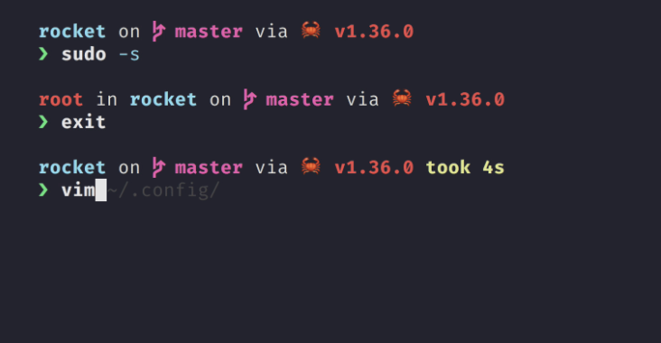
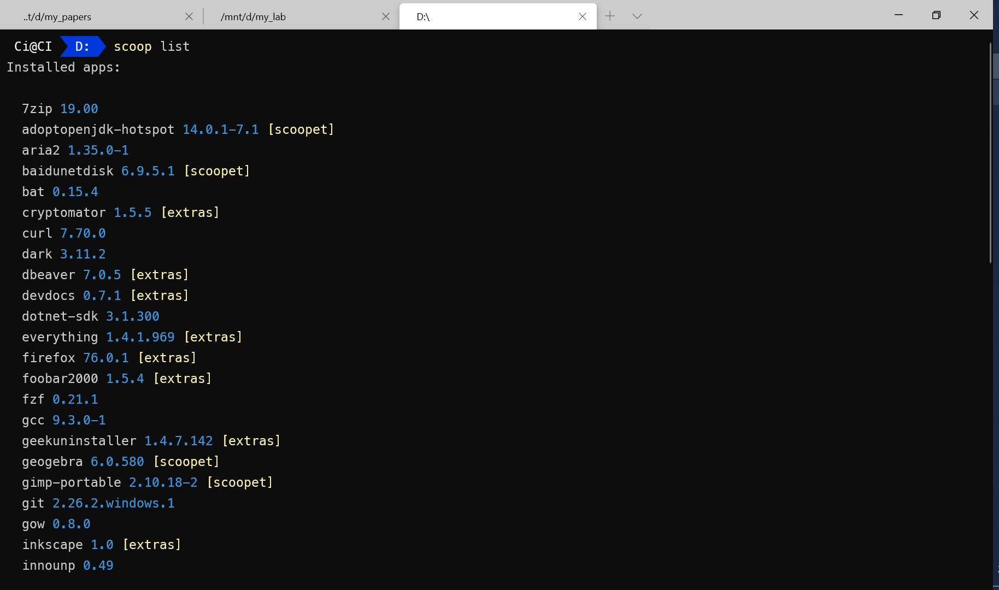

打造 Windows 优雅终端
Contents
打造 Windows 优雅终端¶
1. PowerShell¶
1.1. 主题¶
Starship 是由 Rust 编写的命令行主题，简单高效、容易配置（基本不用配置），而且跨平台。
使用 Scoop 安装
scoop install starship
打开配置文件
code $PROFILE
添加
Invoke-Expression (&starship init powershell)
我之前用 OhMyPosh，但时间长了觉得那些花里胡哨的东西都是浮云，效率才是第一位的，况且 Starship 的默认配置已经可以提供足够多的信息，配置有独立的文件，不与 PowerShell 本身耦合，可定制性高于 OhMyPosh，而且跨平台。
〉详情参考 Starship 官网

因为涉及到字体和 Windows-Terminal，这里推荐使用 Scoop 安装（见 Scoop 篇的介绍）：
scoop install oh-my-posh
scoop install ivaquero/scoopet/firacode-nf
2. Windows-Terminal¶
安装
scoop install windows-terminal
2.1. 右键菜单¶
$basePath = "Registry::HKEY_CLASSES_ROOT\Directory\Background\shell"
sudo New-Item -Path "$basePath\wt" -Force -Value "Windows Terminal here"
sudo New-ItemProperty -Path "$basePath\wt" -Force -Name "Icon" -PropertyType ExpandString -Value "C:\Scoop\apps\windows-terminal\current\Images\LargeTile.scale-100.png"
sudo New-Item -Path "$basePath\wt\command" -Force -Type ExpandString -Value '"C:\Scoop\apps\windows-terminal\current\WindowsTerminal.exe" -p PowerShell -d "%V"'

2.2. 整体配置¶
{
"$schema": "https://aka.ms/terminal-profiles-schema",
// 默认启动的终端 id
"defaultProfile": "{07b52e3e-de2c-5db1-bd2d-ba144ed6c273}",
// 是否将选择的内容自动复制到剪切板
"copyOnSelect": false,
// 是否将格式化后的内容复制到剪切板
"copyFormatting": false,
// 全局设置
"profiles": {
"defaults": {
"fontFace": "MesloLGL NF", //字体
"fontSize": 12,
"useAcrylic": true, //使用不透明度
"acrylicOpacity": 0.9, //不透明度
"cursorShape": "bar",
"snapOnInput": true, //嗅探输入
"startingDirectory": "d:"
}
},
"list": [
{
// Make changes here to the powershell.exe profile.
"guid": "{61c54bbd-c2c6-5271-96e7-009a87ff44bf}",
"name": "电壳",
"commandline": "powershell.exe",
"hidden": false
},
{
"guid": "{46ca431a-3a87-5fb3-83cd-11ececc031d2}",
"hidden": false,
"name": "邪神",
"icon": "file:///c:/users/ci/pictures/icons/kali.png",
"source": "Windows.Terminal.Wsl"
},
{
"guid": "{55ca431a-3a87-5fb3-83cd-11ececc031d2}",
"hidden": false,
"name": "邪神（窗口）",
"icon": "file:///c:/users/ci/pictures/icons/kali.png",
// 窗口模式启动
"commandline": "wsl -d kali-linux kex --wtstart -s"
},
{
// Make changes here to the cmd.exe profile.
"guid": "{0caa0dad-35be-5f56-a8ff-afceeeaa6101}",
"name": "命令提示符",
"commandline": "cmd.exe",
"hidden": false
},
{
"guid": "{b453ae62-4e3d-5e58-b989-0a998ec441b8}",
"hidden": false,
"name": "天蓝",
"source": "Windows.Terminal.Azure"
}
]
}
3. PSReadLine¶
安装
在终端中键入如下命令：
Install-Module PowerShellGet -scope CurrentUser -Force -AllowClobber
Install-Module PSReadLine -scope CurrentUser
配置
打开配置文件
code $PROFILE
添加以下配置
Import-Module PSReadLine
Set-PSReadlineKeyHandler -Key Tab -Function Complete
Set-PSReadLineKeyHandler -Key "Ctrl+d" -Function MenuComplete
Set-PSReadLineKeyHandler -Key "Ctrl+z" -Function Undo
Set-PSReadLineKeyHandler -Key UpArrow -Function HistorySearchBackward
Set-PSReadLineKeyHandler -Key DownArrow -Function HistorySearchForward
4. 整合¶
4.1. 整合 VSCode¶

回到 VSCode，”ctrl”+”,” 进入配置，点击右上角的图标，打开配置的 json 文件，加入如下配置
{
"terminal.integrated.shell.windows": "C:/WINDOWS/System32/WindowsPowerShell/v1.0/powershell.exe",
"terminal.integrated.shellArgs.windows": [
"-ExecutionPolicy",
"Bypass",
"-NoLogo",
"-NoExit",
// 初始化命令
"-Command",
"clear;cd d:"
]
}
4.2. 整合 Scoop¶
添加以下配置
Import-Module "$($(Get-Item $(Get-Command scoop).Path).Directory.Parent.FullName)\modules\scoop-completion"
Import-Module "$($(Get-Item $(Get-Command scoop).Path).Directory.Parent.FullName)\modules\scoop-completion" -ErrorAction SilentlyContinue
4.3. 自定义别名¶
# scoop
function sls {scoop list}
function sud {scoop update}
function suda {scoop update *}
function scl {scoop cleanup *}
function sst {scoop status}
function sck {scoop checkup}
function scat {scoop config aria2-enabled true}
function scaf {scoop config aria2-enabled false}
function srm {del -r $env:scoop\cache\*; clear}
function sbc {cd $env:scoop\buckets\scoopet}